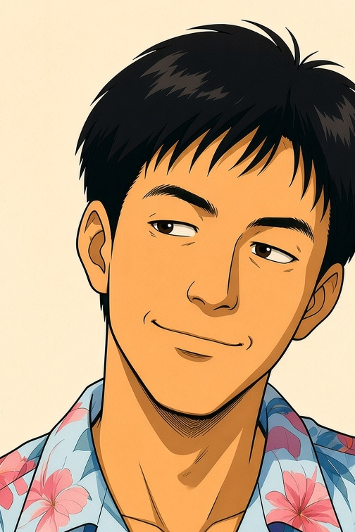
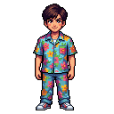

基準 case：won_932，影藝獎 1991，廖炳星《離岸的信》。三張卡尺寸、字體、排版全部跟 live（卡 88×172px，media 78×117，2:3；.t 11px／.s 10px）。
卡面 media 區而家係「作品」位（作品海報／無圖字卡）；(b)(c) 將佢變成「人物」位——作品海報唔再出現，係語義改動，唔止換圖。
live 而家就係咁
.awd63-csscard 降級設計
成本 0 次

era_stars bust 864×1152
裁 504×756（2:3，v109 同款）
成本 0 次

create-character-v3 新開
character 1c3c608c… south 幀
成本 3 次（見下）
資產：character id 1c3c608c-f6ed-4c1b-8edd-4b9cae2cba7e（名「廖炳星」，state「Idle」，128×128，8 方向，view side，template mannequin）；job 3d2accc5-c712-405c-8c11-30c931eebc45。圖檔喺 samples170/，未入 repo assets/。